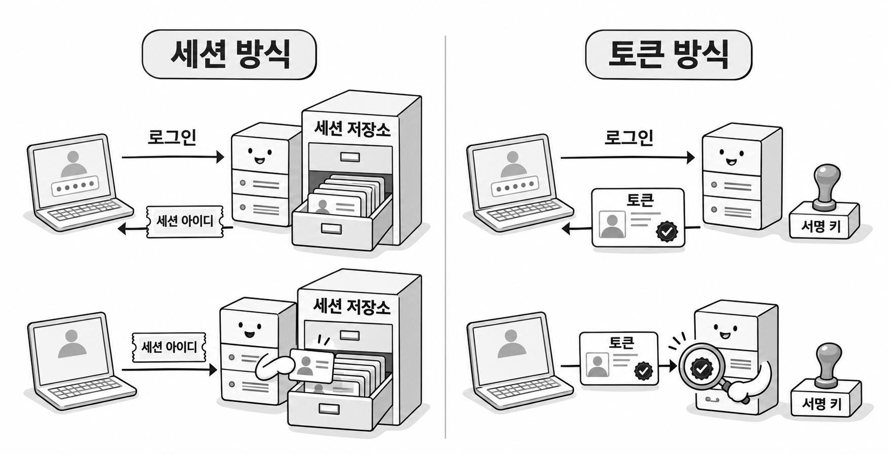
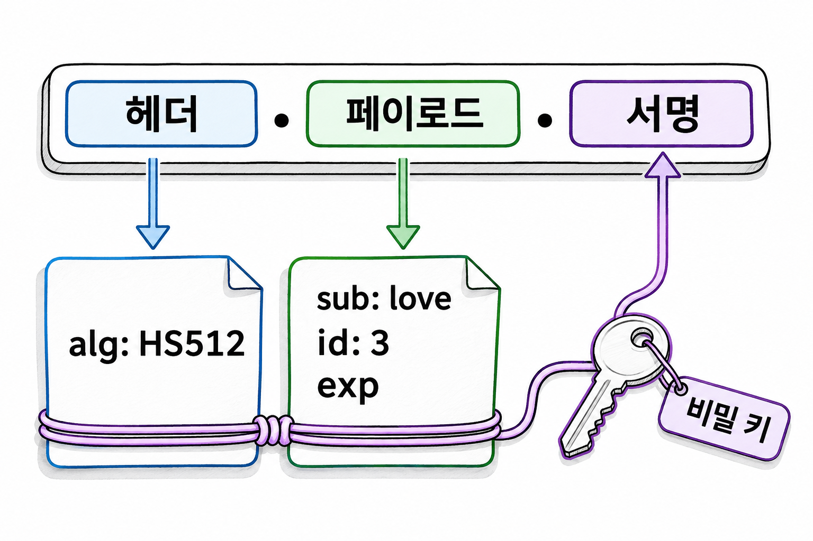
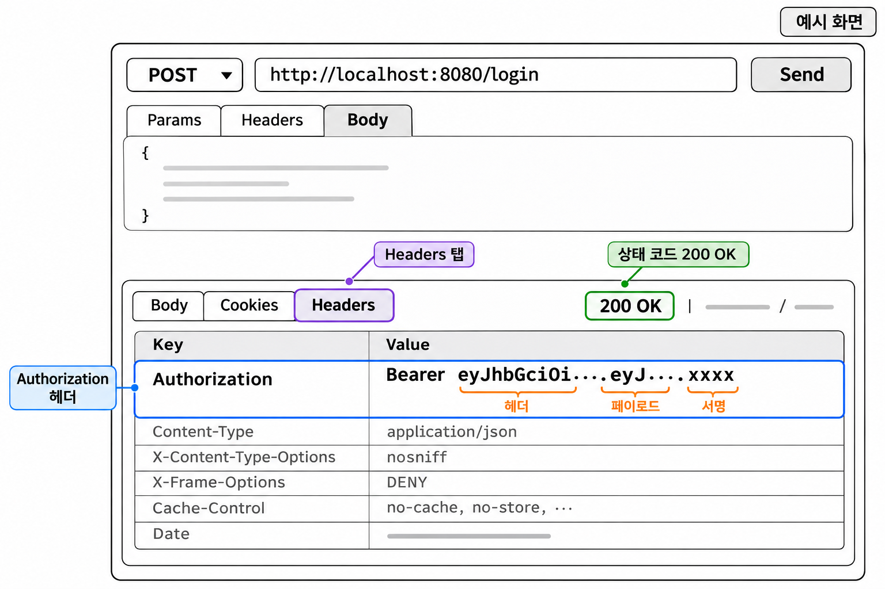

12장. JWT란?
1. 토큰 인증의 개념
1.1 세션 방식과 토큰 방식
11장까지 만든 블로그 API에는 회원가입은 있지만 로그인이 없습니다. 로그인은 사용자가 아이디와 비밀번호로 자기가 누구인지 증명하는 일입니다. 어려운 부분은 로그인한 다음입니다. HTTP는 요청 하나가 끝나면 앞의 요청을 기억하지 않습니다. 그래서 로그인 뒤에 오는 요청마다 서버는 그 요청을 누가 보냈는지 다시 알아내야 합니다. 이 일을 하는 방법에는 세션 방식과 토큰 방식이 있습니다.
세션(session) 방식에서는 서버가 로그인 정보를 저장합니다. 로그인에 성공하면 서버는 자기 메모리에 세션을 만듭니다. 그리고 그 세션을 찾는 열쇠인 세션 아이디를 쿠키에 담아 브라우저에 보냅니다. 브라우저가 다음 요청에 쿠키를 실어 보내면, 서버는 세션 아이디로 저장해 둔 로그인 정보를 찾습니다.
토큰(token) 방식에서는 서버가 로그인 정보를 저장하지 않습니다. 로그인에 성공하면 서버는 사용자 정보를 담은 문자열에 서명해 토큰으로 내줍니다. 클라이언트는 이 토큰을 보관하다가 요청마다 함께 보냅니다. 서버는 서명이 자기가 만든 것인지 확인한 뒤, 토큰 안의 정보로 사용자를 알아냅니다.

그림 12-1처럼 두 방식은 로그인 정보를 어디에 보관하는지가 다릅니다. 나머지 차이는 다음 표와 같습니다.
| 구분 | 세션 방식 | 토큰 방식 |
|---|---|---|
| 로그인 정보 보관 | 서버 메모리(세션 저장소) | 클라이언트(토큰) |
| 요청에 실어 보내는 것 | 세션 아이디(쿠키) | 토큰(요청 헤더) |
| 서버가 확인하는 것 | 세션 저장소에 세션이 있는가 | 토큰의 서명이 올바른가 |
| 서버를 여러 대로 늘릴 때 | 서버끼리 세션을 나눠 가져야 한다 | 같은 서명 키만 있으면 된다 |
| 강제 로그아웃 | 세션을 지우면 끝난다 | 발급한 토큰은 만료 전까지 유효하다 |
이 책의 블로그 API는 React로 만든 별도 화면이 호출하는 REST API이므로 토큰 방식을 씁니다. 표의 마지막 줄처럼 토큰 방식에는 이미 내준 토큰을 서버가 거둬들이기 어렵다는 약점이 있습니다. 이 약점은 19장에서 리프레시 토큰을 만들며 보완합니다.
1.2 JWT의 구조(헤더 · 페이로드 · 서명)
JWT(JSON Web Token)는 토큰 방식에서 가장 널리 쓰는 토큰 형식입니다. JSON으로 쓴 정보를 문자열로 바꾸고 서명을 붙인 다음, 점(.)으로 구분한 세 부분으로 만듭니다.
기본 문법
헤더.페이로드.서명헤더(header)에는 토큰 종류와 서명 알고리즘이 들어갑니다. 이 장에서 만드는 토큰의 헤더는 {"alg":"HS512","typ":"JWT"} 모양입니다. HS512는 HMAC-SHA512 알고리즘입니다. 비밀 키 하나로 서명하고, 확인할 때도 같은 키를 씁니다. 3장에서 본 HTTP 헤더와는 이름만 같고 다른 것입니다. 여기서 말하는 헤더는 토큰 문자열의 첫 부분입니다.
페이로드(payload)에는 토큰에 담을 정보가 들어갑니다. 페이로드에 넣는 이름과 값 한 쌍을 클레임(claim)이라고 합니다. sub(토큰 주인)나 exp(만료 시각)처럼 표준에서 이름을 정해 둔 클레임이 있습니다. id나 username처럼 애플리케이션이 정한 클레임도 넣을 수 있습니다.
서명(signature)은 헤더와 페이로드를 서버만 아는 비밀 키로 계산한 값입니다. 누군가 페이로드의 id를 1에서 2로 바꾸면 서명도 다시 계산해야 합니다. 하지만 비밀 키가 없으므로 맞는 서명을 만들 수 없습니다. 서버는 받은 헤더와 페이로드로 서명을 다시 계산하고, 토큰에 붙은 서명과 다르면 위조된 토큰으로 판단합니다.

헤더와 페이로드는 암호화된 것이 아닙니다. Base64URL로 인코딩만 했기 때문에 토큰을 가진 사람은 누구나 디코딩해서 내용을 읽을 수 있습니다. 서명이 보장하는 것은 내용이 바뀌지 않았다는 사실뿐입니다. 그러므로 페이로드에 비밀번호나 개인정보를 넣으면 안 됩니다.
1.3 Authorization 헤더와 Bearer
클라이언트는 토큰을 HTTP 요청 헤더 Authorization에 담아 보냅니다. 값은 Bearer라는 말 뒤에 공백 한 칸을 두고 토큰을 붙인 형태입니다.
기본 문법
Authorization: Bearer 헤더.페이로드.서명Bearer는 '소지자'라는 뜻입니다. 이 토큰을 가진 사람에게 권한을 준다는 의미로 붙입니다. 서버는 토큰을 누가 보냈는지 따지지 않고 토큰이 올바른지만 봅니다. 그래서 토큰이 남에게 새면 그 사람이 토큰 주인 행세를 할 수 있습니다. 토큰에 만료 시간을 두는 것도 이 때문입니다.
이 책에서는 로그인에 성공하면 서버가 응답 헤더 Authorization에 Bearer 까지 붙인 토큰을 담아 보냅니다. 클라이언트는 이 값을 그대로 보관했다가 다음 요청의 Authorization 헤더에 넣으면 됩니다. 서버가 요청 헤더에서 토큰을 꺼내 검증하는 코드는 14장에서 만듭니다.
2. 로그인 API
2.1 findByUsername과 matches
로그인은 두 단계로 확인합니다. 먼저 요청에 들어온 유저네임으로 회원을 찾습니다. 그다음 찾은 회원의 비밀번호가 요청의 비밀번호와 맞는지 확인합니다.
회원 찾기에는 11장에서 본 쿼리 메서드를 씁니다. 메서드 이름을 findByUsername으로 지으면 Spring Data JPA가 username 필드로 회원을 찾는 쿼리를 만들어 줍니다. 그 유저네임의 회원이 없을 수도 있으므로 반환 타입은 Optional<User>로 둡니다.
코드 조각
Optional<User> findByUsername(String username);비밀번호는 ==나 equals()로 비교할 수 없습니다. DB에는 10장에서 BCrypt로 해시한 값이 저장되어 있습니다. BCrypt는 해시할 때마다 솔트를 새로 만들기 때문에 같은 비밀번호라도 결과가 매번 다릅니다. 그래서 PasswordEncoder의 matches()로 비교합니다.
기본 문법
boolean 일치여부 = passwordEncoder.matches(평문비밀번호, 저장된해시값);matches()는 저장된 해시값 안에 들어 있는 솔트를 꺼냅니다. 그 솔트로 평문 비밀번호를 다시 해시한 뒤 두 값을 비교합니다. 인자 순서를 바꾸면 항상 false가 나오므로, 첫 번째에는 평문을, 두 번째에는 해시값을 넣습니다.
2.2 UnauthorizedException과 401
유저네임이 없거나 비밀번호가 틀리면 로그인에 실패한 것입니다. 인증 실패를 뜻하는 HTTP 상태 코드는 401입니다. 이름은 Unauthorized이지만 뜻은 "누구인지 확인되지 않았다"입니다. 누구인지는 확인됐지만 권한이 없는 경우에는 403을 씁니다. 이 구분은 15장에서 다시 다룹니다.
401용 예외는 7장의 NotFoundException, 11장의 BadRequestException과 같은 방식으로 만듭니다. 그리고 GlobalExceptionHandler에 처리기를 하나 추가합니다. Service는 실패하면 예외를 던지기만 하고, 응답 모양은 처리기가 정합니다.
예제 12-1 — 로그인 API 만들기
이어서: 예제 11-6
파일명: src/main/java/com/newtenco/blog/core/handler/errors/UnauthorizedException.java
package com.newtenco.blog.core.handler.errors;
public class UnauthorizedException extends RuntimeException {
public UnauthorizedException(String message) {
super(message);
}
}파일명: src/main/java/com/newtenco/blog/core/handler/GlobalExceptionHandler.java
package com.newtenco.blog.core.handler;
import com.newtenco.blog.core.handler.errors.BadRequestException;
import com.newtenco.blog.core.handler.errors.NotFoundException;
import com.newtenco.blog.core.handler.errors.UnauthorizedException;
import com.newtenco.blog.core.util.Resp;
import lombok.extern.slf4j.Slf4j;
import org.springframework.http.HttpStatus;
import org.springframework.http.ResponseEntity;
import org.springframework.validation.FieldError;
import org.springframework.web.ErrorResponse;
import org.springframework.web.bind.MethodArgumentNotValidException;
import org.springframework.web.bind.MissingServletRequestParameterException;
import org.springframework.web.bind.annotation.ExceptionHandler;
import org.springframework.web.bind.annotation.RestControllerAdvice;
@Slf4j
@RestControllerAdvice
public class GlobalExceptionHandler {
@ExceptionHandler(MethodArgumentNotValidException.class)
public ResponseEntity<?> validation(MethodArgumentNotValidException e) {
FieldError fe = e.getBindingResult().getFieldErrors().getFirst();
return Resp.fail(HttpStatus.BAD_REQUEST, fe.getDefaultMessage());
}
@ExceptionHandler(MissingServletRequestParameterException.class)
public ResponseEntity<?> missingParam(MissingServletRequestParameterException e) {
return Resp.fail(HttpStatus.BAD_REQUEST, e.getParameterName() + ":값을 입력해주세요");
}
@ExceptionHandler(BadRequestException.class)
public ResponseEntity<?> ex400(BadRequestException e) {
return Resp.fail(HttpStatus.BAD_REQUEST, e.getMessage());
}
@ExceptionHandler(UnauthorizedException.class)
public ResponseEntity<?> ex401(UnauthorizedException e) {
return Resp.fail(HttpStatus.UNAUTHORIZED, e.getMessage());
}
@ExceptionHandler(NotFoundException.class)
public ResponseEntity<?> ex404(NotFoundException e) {
return Resp.fail(HttpStatus.NOT_FOUND, e.getMessage());
}
@ExceptionHandler(Exception.class)
public ResponseEntity<?> exUnknown(Exception e) {
if (e instanceof ErrorResponse er) {
HttpStatus status = HttpStatus.valueOf(er.getStatusCode().value());
return Resp.fail(status, status.getReasonPhrase());
}
log.error("예상하지 못한 오류", e);
return Resp.fail(HttpStatus.INTERNAL_SERVER_ERROR, "관리자에게 문의하세요");
}
}파일명: src/main/java/com/newtenco/blog/user/UserRepository.java
package com.newtenco.blog.user;
import org.springframework.data.jpa.repository.JpaRepository;
import java.util.Optional;
public interface UserRepository extends JpaRepository<User, Integer> {
boolean existsByUsername(String username);
Optional<User> findByUsername(String username);
}파일명: src/main/java/com/newtenco/blog/user/UserRequest.java
package com.newtenco.blog.user;
import jakarta.validation.constraints.Email;
import jakarta.validation.constraints.NotBlank;
import jakarta.validation.constraints.Size;
public class UserRequest {
public record JoinDTO(
@NotBlank(message = "유저네임을 입력해주세요")
@Size(min = 4, max = 20, message = "유저네임은 4~20자여야 합니다")
String username,
@NotBlank(message = "비밀번호를 입력해주세요")
@Size(min = 4, max = 20, message = "비밀번호는 4~20자여야 합니다")
String password,
@NotBlank(message = "이메일을 입력해주세요")
@Email(message = "이메일 형식이 올바르지 않습니다")
String email) {
public User toEntity(String encPassword) {
return User.builder()
.username(username)
.password(encPassword)
.email(email)
.build();
}
}
public record LoginDTO(String username, String password) {
}
}파일명: src/main/java/com/newtenco/blog/user/UserService.java
package com.newtenco.blog.user;
import com.newtenco.blog.core.handler.errors.BadRequestException;
import com.newtenco.blog.core.handler.errors.UnauthorizedException;
import lombok.RequiredArgsConstructor;
import org.springframework.security.crypto.password.PasswordEncoder;
import org.springframework.stereotype.Service;
import org.springframework.transaction.annotation.Transactional;
// 회원 기능(가입 · 로그인 · 중복 확인)의 업무 규칙을 맡는 서비스
// @Transactional(readOnly = true): 기본은 읽기 전용 트랜잭션. 데이터를 바꾸는 메서드에만 @Transactional을 다시 붙인다
@RequiredArgsConstructor
@Transactional(readOnly = true)
@Service
public class UserService {
// 두 객체 모두 @RequiredArgsConstructor가 만든 생성자로 스프링이 주입한다
private final UserRepository userRepository;
private final PasswordEncoder passwordEncoder;
// 회원을 저장하므로 쓰기 가능한 트랜잭션으로 실행한다
@Transactional
public UserResponse.DTO 회원가입(UserRequest.JoinDTO reqDTO) {
// 같은 유저네임이 있으면 400으로 거절한다. 느린 BCrypt 계산보다 먼저 검사한다
if (userRepository.existsByUsername(reqDTO.username())) {
throw new BadRequestException("이미 존재하는 유저네임입니다");
}
// 받은 비밀번호를 BCrypt 해시로 바꾼다. 호출할 때마다 솔트가 새로 정해져 결과가 매번 다르다
// 원래 비밀번호(1234)는 엔티티에도 DB에도 들어가지 않는다
String encPassword = passwordEncoder.encode(reqDTO.password());
User savedUser = userRepository.save(reqDTO.toEntity(encPassword));
// 응답 DTO에는 비밀번호가 없다
return new UserResponse.DTO(savedUser);
}
// 조회만 하므로 클래스의 읽기 전용 트랜잭션을 그대로 쓴다
public UserResponse.DTO 로그인(UserRequest.LoginDTO reqDTO) {
// 1단계: 유저네임으로 회원을 찾는다. 없으면 401
User user = userRepository.findByUsername(reqDTO.username())
.orElseThrow(() -> new UnauthorizedException("유저네임 혹은 비밀번호가 일치하지 않습니다"));
// 2단계: matches(입력한 비밀번호, 저장된 해시)로 비교한다. 틀리면 401
// 저장된 해시 안의 솔트로 입력값을 다시 해시해 비교하므로 equals()로는 비교할 수 없다
// 두 실패에 같은 메시지를 쓴다. 나누면 어떤 유저네임이 가입돼 있는지 공격자에게 알려 주게 된다
if (!passwordEncoder.matches(reqDTO.password(), user.getPassword())) {
throw new UnauthorizedException("유저네임 혹은 비밀번호가 일치하지 않습니다");
}
// 지금은 회원 정보만 돌려준다. 토큰은 예제 12-4에서 더한다
return new UserResponse.DTO(user);
}
// 가입 화면에서 미리 확인하는 용도다. 이미 있으면 false, 없으면 true를 돌려준다
public UserResponse.AvailableDTO 유저네임중복체크(String username) {
boolean available = !userRepository.existsByUsername(username);
return new UserResponse.AvailableDTO(available);
}
}파일명: src/main/java/com/newtenco/blog/user/UserController.java
package com.newtenco.blog.user;
import com.newtenco.blog.core.util.Resp;
import jakarta.validation.Valid;
import lombok.RequiredArgsConstructor;
import org.springframework.http.ResponseEntity;
import org.springframework.web.bind.annotation.GetMapping;
import org.springframework.web.bind.annotation.PostMapping;
import org.springframework.web.bind.annotation.RequestBody;
import org.springframework.web.bind.annotation.RequestParam;
import org.springframework.web.bind.annotation.RestController;
@RequiredArgsConstructor
@RestController
public class UserController {
private final UserService userService;
@PostMapping("/join")
public ResponseEntity<?> join(@Valid @RequestBody UserRequest.JoinDTO reqDTO) {
return Resp.ok(userService.회원가입(reqDTO));
}
@PostMapping("/login")
public ResponseEntity<?> login(@RequestBody UserRequest.LoginDTO reqDTO) {
return Resp.ok(userService.로그인(reqDTO));
}
@GetMapping("/check-username")
public ResponseEntity<?> checkUsername(@RequestParam("username") String username) {
return Resp.ok(userService.유저네임중복체크(username));
}
}실행 결과
서버를 다시 띄우면 H2 메모리 DB가 비워지므로, 비밀번호를 알고 있는 회원을 먼저 가입시킵니다. Postman에서 POST http://localhost:8080/join을 고르고, Body › raw › JSON에 {"username":"love","password":"1234","email":"love@nate.com"}을 넣어 보냅니다. 이어서 POST http://localhost:8080/login에 {"username":"love","password":"1234"}를 보내면 상태 코드 200과 함께 다음 응답이 옵니다. 샘플 회원이 두 명 들어 있으므로 새 회원의 id는 3입니다.
{
"status": 200,
"msg": "성공",
"body": {
"id": 3,
"username": "love",
"email": "love@nate.com"
}
}비밀번호를 "5678"로 바꿔 보내면 상태 코드 401과 함께 다음 응답이 옵니다. 유저네임을 "nobody"처럼 없는 값으로 바꿔도 같은 응답이 옵니다.
{
"status": 401,
"msg": "유저네임 혹은 비밀번호가 일치하지 않습니다",
"body": null
}findByUsername()이 회원을 찾지 못하면 orElseThrow()가 UnauthorizedException을 던집니다. 비밀번호가 다르면 if 문이 같은 예외를 던집니다. 두 경우 모두 예외는 ex401()에 잡혀 401 응답이 됩니다. 로그인()은 조회만 하는 메서드라서 @Transactional을 따로 붙이지 않았습니다. 그래서 클래스에 붙은 readOnly = true가 그대로 적용됩니다.
두 실패에 같은 메시지를 쓴 데에는 이유가 있습니다. 메시지를 "없는 유저네임입니다"와 "비밀번호가 틀렸습니다"로 나누면 사용자에게는 친절합니다. 하지만 공격자도 그 메시지를 보고 어떤 유저네임이 가입되어 있는지 알아낼 수 있습니다. 가입된 유저네임을 알면 그 계정의 비밀번호만 집중해서 대입해 볼 수 있습니다. 11장의 유저네임 중복 확인 API는 가입 화면에 필요해서 그 정보를 알려 줄 수밖에 없습니다. 그렇다고 로그인 응답까지 같은 정보를 흘릴 이유는 없습니다.
3. JwtUtil 빈 만들기
3.1 java-jwt 라이브러리
JWT를 직접 만들려면 Base64URL 인코딩과 HMAC 계산을 모두 구현해야 합니다. 이 책에서는 Auth0가 만든 com.auth0:java-jwt 4.5.0 라이브러리에 이 일을 맡깁니다. 이 라이브러리는 빌더로 클레임을 하나씩 쌓고, 마지막에 서명 알고리즘을 넘겨 토큰 문자열을 만듭니다.
기본 문법
Algorithm 알고리즘 = Algorithm.HMAC512(비밀키);
String 토큰 = JWT.create()
.withSubject(토큰주인)
.withExpiresAt(만료시각)
.withClaim(클레임이름, 값)
.sign(알고리즘);withSubject()는 sub 클레임을, withExpiresAt()은 exp 클레임을 채웁니다. 이름이 정해지지 않은 클레임은 withClaim()으로 넣습니다. sign()은 헤더와 페이로드를 인코딩하고 서명까지 붙여서 헤더.페이로드.서명 문자열을 돌려줍니다.
라이브러리는 build.gradle의 dependencies에 한 줄을 추가해서 받습니다. 토큰을 만드는 코드가 컴파일될 때도, 서버가 실행될 때도 필요하므로 implementation으로 넣습니다.
코드 조각
implementation 'com.auth0:java-jwt:4.5.0'3.2 @Component로 등록하고 비밀키 · 만료 시간을 설정값으로 받기
토큰을 만드는 코드는 로그인에서 씁니다. 14장에서 만들 토큰 검증 코드도 같은 서명 키를 써야 합니다. 그래서 토큰을 다루는 코드를 JwtUtil 클래스 한곳에 모읍니다.
JwtUtil은 2장에서 배운 @Component로 빈으로 등록합니다. 서명 키와 만료 시간은 코드에 적지 않고 2장처럼 application.properties에 설정 키를 만들어 @Value로 받습니다. 서명 키를 코드에 직접 적으면 키를 바꿀 때마다 코드를 고쳐야 하고, 키가 소스 코드와 함께 저장소에 남습니다. 설정값으로 받아 두면 22장에서 이 값을 환경 변수로 바꿀 때 JwtUtil 코드는 그대로 두고 설정 파일만 고치면 됩니다.
설정 키 이름은 app.jwt.secret과 app.jwt.expiration-time으로 짓습니다. app.으로 시작하는 이름은 스프링이 정한 설정이 아니라 이 프로젝트가 만든 설정이라는 표시입니다.
예제 12-2 — 설정값을 받는 JwtUtil 빈 만들기
이어서: 예제 12-1
파일명: build.gradle
plugins {
id 'java'
id 'org.springframework.boot' version '4.1.3'
id 'io.spring.dependency-management' version '1.1.7'
}
group = 'com.newtenco'
version = '0.0.1-SNAPSHOT'
java {
toolchain {
languageVersion = JavaLanguageVersion.of(21)
}
}
repositories {
mavenCentral()
}
dependencies {
implementation 'com.auth0:java-jwt:4.5.0'
implementation 'org.springframework.boot:spring-boot-h2console'
implementation 'org.springframework.boot:spring-boot-starter-data-jpa'
implementation 'org.springframework.boot:spring-boot-starter-security'
implementation 'org.springframework.boot:spring-boot-starter-validation'
implementation 'org.springframework.boot:spring-boot-starter-webmvc'
compileOnly 'org.projectlombok:lombok'
developmentOnly 'org.springframework.boot:spring-boot-devtools'
runtimeOnly 'com.h2database:h2'
annotationProcessor 'org.projectlombok:lombok'
}파일명: src/main/resources/application.properties
server.port=8080
spring.servlet.encoding.charset=UTF-8
spring.servlet.encoding.force=true
spring.datasource.driver-class-name=org.h2.Driver
spring.datasource.url=jdbc:h2:mem:test
spring.datasource.username=sa
spring.datasource.password=
spring.h2.console.enabled=true
spring.jpa.hibernate.ddl-auto=create
spring.jpa.show-sql=true
spring.jpa.properties.hibernate.format_sql=true
spring.jpa.open-in-view=false
spring.sql.init.data-locations=classpath:db/data.sql
spring.jpa.defer-datasource-initialization=true
app.jwt.secret=newtenco-blog-jwt-secret-key-must-be-at-least-64-bytes-long-0123456789
app.jwt.expiration-time=86400000파일명: src/main/java/com/newtenco/blog/core/util/JwtUtil.java
package com.newtenco.blog.core.util;
import com.auth0.jwt.algorithms.Algorithm;
import org.springframework.beans.factory.annotation.Value;
import org.springframework.stereotype.Component;
// JWT를 만드는 일(12장)과 검사하는 일(14장)을 한곳에 모을 클래스
// 두 일은 반드시 같은 비밀 키를 써야 하므로 한 클래스에 둔다
// @Component: 스프링이 객체를 하나만 만들어 빈으로 등록한다. 필요한 곳은 생성자로 주입받는다
@Component
public class JwtUtil {
// 토큰을 담는 HTTP 헤더 이름. 요청 · 응답 모두 이 이름을 쓴다
public static final String HEADER = "Authorization";
// 토큰 앞에 붙이는 말. "Bearer" 뒤의 공백 한 칸까지가 접두사다
// 두 값은 HTTP 규칙으로 정해진 이름이라 환경마다 바뀌지 않으므로 설정 파일이 아닌 상수로 둔다
public static final String TOKEN_PREFIX = "Bearer ";
// 서명 도구(HS512 알고리즘 + 비밀 키). 생성자에서 한 번 만들어 두고 계속 쓴다
private final Algorithm algorithm;
// 토큰 유효 시간(밀리초). 86400000이면 24시간
private final long expirationTime;
// @Value: application.properties 같은 설정 파일의 값을 매개변수로 받는다
// 비밀 키를 코드에 직접 적지 않아야 키가 소스 코드와 함께 저장소에 남지 않는다
public JwtUtil(@Value("${app.jwt.secret}") String secret,
@Value("${app.jwt.expiration-time}") long expirationTime) {
// HMAC512: 비밀 키 하나로 서명을 만들고, 검사할 때도 같은 키를 쓰는 방식
this.algorithm = Algorithm.HMAC512(secret);
this.expirationTime = expirationTime;
}
}실행 결과
IntelliJ에서 Load Gradle Changes를 눌러 java-jwt를 내려받습니다. 그다음 Terminal에서 gradlew.bat bootRun으로 서버를 띄웁니다. 서버는 오류 없이 시작됩니다. 아직 JwtUtil을 쓰는 곳이 없으므로 로그인 응답은 예제 12-1과 같습니다.
스프링은 JwtUtil 빈을 만들 때 생성자를 호출합니다. 이때 @Value가 붙은 두 매개변수에 설정 파일의 값을 넣어 줍니다. app.jwt.expiration-time에 적은 문자열 86400000은 매개변수 타입에 맞게 long으로 바뀝니다. 이 값은 밀리초 단위로 24시간(1000 × 60 × 60 × 24)입니다.
생성자는 받은 비밀키로 곧바로 Algorithm 객체를 만들어 필드에 둡니다. 그러면 키 문자열을 필드에 두었다가 토큰을 만들 때마다 알고리즘을 다시 만들지 않아도 됩니다. 이렇게 생성자 안에서 값을 가공해야 하므로 @RequiredArgsConstructor 대신 생성자를 직접 썼습니다. @RequiredArgsConstructor가 만드는 생성자는 받은 값을 필드에 그대로 넣기만 합니다.
JwtUtil 빈은 하나만 만들어지는 싱글톤이고, 두 필드는 생성자에서 한 번 정해진 뒤 바뀌지 않는 final입니다. 그래서 여러 요청이 동시에 이 빈을 써도 서로 영향을 주지 않습니다.
서명 키 문자열을 일부러 길게 쓴 데에도 이유가 있습니다. HS512는 SHA-512를 쓰므로 서명 키도 512비트, 즉 64바이트 이상이어야 합니다. JWT 알고리즘 표준(RFC 7518)이 해시 출력 길이 이상의 키를 쓰도록 정하고 있습니다. 키가 짧으면 공격자가 키를 추측하기 쉬워집니다. 예제의 키는 70바이트입니다.
3.3 HEADER와 TOKEN_PREFIX는 상수로 두는 이유
예제 12-2에서 비밀키와 만료 시간은 설정값으로 받았지만, HEADER와 TOKEN_PREFIX는 public static final 상수로 남겼습니다. 두 값의 성격이 다르기 때문입니다.
| 값 | 성격 | 두는 곳 |
|---|---|---|
| 서명 키 · 만료 시간 | 실행 환경마다 달라질 수 있다. 서명 키는 비밀이다 | 설정 파일(@Value로 받는 필드) |
HEADER · TOKEN_PREFIX | HTTP 규칙으로 정해진 이름이라 어디서 실행해도 같다 | 코드(static final 상수) |
"Authorization"과 "Bearer "는 1.3에서 본 HTTP 규칙이므로 개발 환경과 운영 환경에서 다를 일이 없습니다. 설정 파일로 뺄 이유가 없습니다.
상수로 두면 쓰는 쪽도 편합니다. static 상수는 빈을 주입받지 않아도 JwtUtil.HEADER처럼 클래스 이름으로 바로 꺼낼 수 있습니다. 4.2의 Controller는 토큰을 만들지 않고 헤더 이름만 쓰므로 JwtUtil 빈을 주입받을 필요가 없습니다.
더 중요한 이유는 애너테이션에 있습니다. 자바 애너테이션의 속성값에는 컴파일할 때 값이 정해지는 상수만 넣을 수 있습니다. @Value로 받는 필드는 서버가 실행되어야 값이 정해지므로 애너테이션에 넣을 수 없습니다. 24장에서 API 문서를 만들 때 springdoc 애너테이션에 토큰 헤더 이름을 적어야 합니다. 이때 문자열을 직접 쓰지 않고 다음처럼 상수를 가리킵니다.
코드 조각
@Header(name = JwtUtil.HEADER, description = "로그인 토큰")3.4 토큰 발급(클레임 · 만료 시간 · 서명)
이제 JwtUtil에 토큰을 만드는 create() 메서드를 추가합니다. 회원 정보를 받아 클레임을 채우고, 만료 시각을 정하고, 생성자에서 만든 알고리즘으로 서명합니다.
예제 12-3 — 토큰 발급 메서드 만들기
이어서: 예제 12-2
파일명: src/main/java/com/newtenco/blog/core/util/JwtUtil.java
package com.newtenco.blog.core.util;
import com.auth0.jwt.JWT;
import com.auth0.jwt.algorithms.Algorithm;
import com.newtenco.blog.user.User;
import org.springframework.beans.factory.annotation.Value;
import org.springframework.stereotype.Component;
import java.util.Date;
// JWT를 만드는 일(12장)과 검사하는 일(14장)을 한곳에 모을 클래스
// 두 일은 반드시 같은 비밀 키를 써야 하므로 한 클래스에 둔다
// @Component: 스프링이 객체를 하나만 만들어 빈으로 등록한다. 필요한 곳은 생성자로 주입받는다
@Component
public class JwtUtil {
// 토큰을 담는 HTTP 헤더 이름. 요청 · 응답 모두 이 이름을 쓴다
public static final String HEADER = "Authorization";
// 토큰 앞에 붙이는 말. "Bearer" 뒤의 공백 한 칸까지가 접두사다
// 두 값은 HTTP 규칙으로 정해진 이름이라 환경마다 바뀌지 않으므로 설정 파일이 아닌 상수로 둔다
public static final String TOKEN_PREFIX = "Bearer ";
// 서명 도구(HS512 알고리즘 + 비밀 키). 생성자에서 한 번 만들어 두고 계속 쓴다
private final Algorithm algorithm;
// 토큰 유효 시간(밀리초). 86400000이면 24시간
private final long expirationTime;
// @Value: application.properties 같은 설정 파일의 값을 매개변수로 받는다
// 비밀 키를 코드에 직접 적지 않아야 키가 소스 코드와 함께 저장소에 남지 않는다
public JwtUtil(@Value("${app.jwt.secret}") String secret,
@Value("${app.jwt.expiration-time}") long expirationTime) {
// HMAC512: 비밀 키 하나로 서명을 만들고, 검사할 때도 같은 키를 쓰는 방식
this.algorithm = Algorithm.HMAC512(secret);
this.expirationTime = expirationTime;
}
// 로그인에 성공한 회원의 토큰을 만든다
// 토큰 내용(페이로드)은 누구나 디코딩해 읽을 수 있으므로 비밀번호 · 이메일은 넣지 않는다
public String create(User user) {
String jwt = JWT.create()
// sub(subject) 칸: 토큰의 주인. 유저네임을 넣는다
.withSubject(user.getUsername())
// exp 칸: 만료 시각. 지금 시각에 유효 시간을 더한 때다
.withExpiresAt(new Date(System.currentTimeMillis() + expirationTime))
// 직접 이름을 정한 칸. 14장의 인증 필터가 요청을 보낸 회원을 알아낼 때 쓴다
.withClaim("id", user.getId())
.withClaim("username", user.getUsername())
// 헤더와 페이로드를 비밀 키로 서명해 "헤더.페이로드.서명" 문자열을 만든다
.sign(algorithm);
// 앞에 "Bearer "를 붙여 돌려준다. 클라이언트는 이 값을 그대로 Authorization 헤더에 넣으면 된다
return TOKEN_PREFIX + jwt;
}
}실행 결과
서버는 오류 없이 시작됩니다. create()를 호출하는 곳이 아직 없으므로 로그인 응답은 예제 12-1과 같습니다. 토큰은 4절에서 로그인에 연결한 뒤 확인합니다.
create()는 토큰을 세 단계로 만듭니다.
- 클레임을 채웁니다.
sub에는 유저네임을 넣고, 애플리케이션 클레임으로 회원 번호id와username을 넣습니다. 14장의 인증 필터는 이 값들로 요청을 보낸 회원이 누구인지 알아냅니다. 1.2에서 본 것처럼 페이로드는 누구나 읽을 수 있으므로 비밀번호와 이메일은 넣지 않습니다. - 만료 시각을 정합니다.
System.currentTimeMillis()로 얻은 지금 시각(밀리초)에expirationTime을 더하면 24시간 뒤의 시각이 나옵니다. java-jwt는 이 값을exp클레임에 초 단위로 적습니다. sign(algorithm)이 헤더와 페이로드를 인코딩하고 서명을 붙입니다. 헤더의alg에는algorithm에 맞는HS512가 자동으로 들어갑니다.
마지막 줄에서 토큰 앞에 TOKEN_PREFIX를 붙여 Bearer 헤더.페이로드.서명 형태로 돌려줍니다. 클라이언트가 받은 값을 그대로 Authorization 헤더에 넣을 수 있게 하기 위해서입니다.
토큰을 발급한 시각을 뜻하는 iat 클레임은 이 예제에서 java-jwt가 자동으로 넣지 않습니다. 필요하면 withIssuedAt()으로 넣습니다. 이 책의 인증 필터는 발급 시각을 쓰지 않으므로 생략했습니다.
create()가 static이 아니라는 점도 짚어 둡니다. 이 메서드는 생성자에서 설정값으로 채운 algorithm과 expirationTime 필드를 씁니다. 그래서 JwtUtil.create(user)처럼 클래스 이름으로는 호출할 수 없습니다. 빈을 주입받은 뒤 jwtUtil.create(user)로 호출합니다.
4. 토큰 돌려주기
4.1 JwtUtil을 주입받는 UserService
로그인에 성공하면 UserService가 토큰을 만듭니다. UserService는 이미 UserRepository와 PasswordEncoder를 생성자로 주입받고 있습니다. 여기에 final 필드로 JwtUtil을 하나 더하면 @RequiredArgsConstructor가 만드는 생성자에 매개변수가 추가되고, 스프링이 JwtUtil 빈을 넣어 줍니다.
Service는 토큰과 회원 정보 두 가지를 Controller에 넘겨야 합니다. 메서드는 값을 하나만 돌려줄 수 있으므로 둘을 묶는 record UserResponse.LoginDTO를 만듭니다. 이 DTO는 클라이언트에게 그대로 보내는 응답이 아닙니다. Service와 Controller 사이에서 값을 옮기는 용도입니다.
예제 12-4 — 로그인할 때 토큰 만들기
이어서: 예제 12-3
파일명: src/main/java/com/newtenco/blog/user/UserResponse.java
package com.newtenco.blog.user;
public class UserResponse {
public record DTO(Integer id, String username, String email) {
public DTO(User user) {
this(user.getId(), user.getUsername(), user.getEmail());
}
}
public record LoginDTO(String accessToken, DTO user) {
}
public record AvailableDTO(boolean available) {
}
}파일명: src/main/java/com/newtenco/blog/user/UserService.java
package com.newtenco.blog.user;
import com.newtenco.blog.core.handler.errors.BadRequestException;
import com.newtenco.blog.core.handler.errors.UnauthorizedException;
import com.newtenco.blog.core.util.JwtUtil;
import lombok.RequiredArgsConstructor;
import org.springframework.security.crypto.password.PasswordEncoder;
import org.springframework.stereotype.Service;
import org.springframework.transaction.annotation.Transactional;
@RequiredArgsConstructor
@Transactional(readOnly = true)
@Service
public class UserService {
private final UserRepository userRepository;
private final PasswordEncoder passwordEncoder;
private final JwtUtil jwtUtil;
@Transactional
public UserResponse.DTO 회원가입(UserRequest.JoinDTO reqDTO) {
if (userRepository.existsByUsername(reqDTO.username())) {
throw new BadRequestException("이미 존재하는 유저네임입니다");
}
// 받은 비밀번호를 BCrypt 해시로 바꾼다. 호출할 때마다 솔트가 새로 정해져 결과가 매번 다르다
// 원래 비밀번호(1234)는 엔티티에도 DB에도 들어가지 않는다
String encPassword = passwordEncoder.encode(reqDTO.password());
User savedUser = userRepository.save(reqDTO.toEntity(encPassword));
return new UserResponse.DTO(savedUser);
}
public UserResponse.LoginDTO 로그인(UserRequest.LoginDTO reqDTO) {
// 1단계: 유저네임으로 회원을 찾는다. 없으면 401
User user = userRepository.findByUsername(reqDTO.username())
.orElseThrow(() -> new UnauthorizedException("유저네임 혹은 비밀번호가 일치하지 않습니다"));
// 2단계: matches(입력한 평문, 저장된 해시). 해시 안의 솔트로 평문을 다시 해시해 비교한다
// 두 실패에 같은 메시지를 쓴다. 나누면 어떤 유저네임이 가입돼 있는지 공격자에게 알려 주게 된다
if (!passwordEncoder.matches(reqDTO.password(), user.getPassword())) {
throw new UnauthorizedException("유저네임 혹은 비밀번호가 일치하지 않습니다");
}
// 인증에 성공한 회원의 JWT를 만든다
String accessToken = jwtUtil.create(user);
return new UserResponse.LoginDTO(accessToken, new UserResponse.DTO(user));
}
public UserResponse.AvailableDTO 유저네임중복체크(String username) {
boolean available = !userRepository.existsByUsername(username);
return new UserResponse.AvailableDTO(available);
}
}실행 결과
예제 12-1처럼 love로 가입한 뒤 로그인 요청을 보냅니다. Controller는 아직 Resp.ok(userService.로그인(reqDTO))로 Service의 반환값을 그대로 본문에 넣습니다. 그래서 본문에 토큰과 회원 정보가 함께 나옵니다. 토큰 문자열은 실제로는 수백 글자이고, 만료 시각이 달라지므로 로그인할 때마다 바뀝니다.
{
"status": 200,
"msg": "성공",
"body": {
"accessToken": "Bearer 헤더.페이로드.서명",
"user": {
"id": 3,
"username": "love",
"email": "love@nate.com"
}
}
}UserService에서 바뀐 곳은 private final JwtUtil jwtUtil; 필드 한 줄과 jwtUtil.create(user) 호출입니다. 생성자 코드는 @RequiredArgsConstructor가 다시 만들어 주므로 직접 고칠 곳이 없습니다.
JwtUtil을 static 메서드로 두지 않고 빈으로 주입받으면 테스트할 때도 이점이 있습니다. 25장의 단위 테스트에서는 테스트용 키를 넣어 new JwtUtil(...)로 직접 만들 수 있습니다. 정해진 키로 만든 토큰을 확인할 수 있고, 생성자로 주입받으므로 UserService에 목 객체를 바꿔 끼우기도 쉽습니다.
4.2 응답 헤더에 토큰 담기
예제 12-4는 토큰이 본문에 들어 있어 1.3에서 정한 약속과 다릅니다. 토큰은 응답 헤더 Authorization에 담고, 본문에는 다른 API처럼 회원 정보만 두도록 Controller를 고칩니다.
예제 12-5 — 로그인 응답 헤더에 토큰 담기
이어서: 예제 12-4
파일명: src/main/java/com/newtenco/blog/user/UserController.java
package com.newtenco.blog.user;
import com.newtenco.blog.core.util.JwtUtil;
import com.newtenco.blog.core.util.Resp;
import jakarta.validation.Valid;
import lombok.RequiredArgsConstructor;
import org.springframework.http.ResponseEntity;
import org.springframework.web.bind.annotation.GetMapping;
import org.springframework.web.bind.annotation.PostMapping;
import org.springframework.web.bind.annotation.RequestBody;
import org.springframework.web.bind.annotation.RequestParam;
import org.springframework.web.bind.annotation.RestController;
@RequiredArgsConstructor
@RestController
public class UserController {
private final UserService userService;
@PostMapping("/join")
public ResponseEntity<?> join(@Valid @RequestBody UserRequest.JoinDTO reqDTO) {
return Resp.ok(userService.회원가입(reqDTO));
}
@PostMapping("/login")
public ResponseEntity<?> login(@RequestBody UserRequest.LoginDTO reqDTO) {
UserResponse.LoginDTO loginDTO = userService.로그인(reqDTO);
// 토큰은 응답 헤더 Authorization에, 회원 정보는 본문에 담는다
// Resp.ok()로는 헤더를 더할 수 없어서 ResponseEntity 빌더로 직접 만든다
return ResponseEntity.ok()
.header(JwtUtil.HEADER, loginDTO.accessToken())
.body(new Resp<>(200, "성공", loginDTO.user()));
}
@GetMapping("/check-username")
public ResponseEntity<?> checkUsername(@RequestParam("username") String username) {
return Resp.ok(userService.유저네임중복체크(username));
}
}실행 결과
love로 가입한 뒤 로그인 요청을 보내면 응답 본문은 예제 12-1과 같습니다. Postman 응답 영역의 Headers 탭에는 다음 헤더가 추가됩니다.
Authorization: Bearer 헤더.페이로드.서명
생성형 예시 · 실제 실행 안 함
받은 토큰에서 Bearer 를 뺀 부분의 페이로드를 디코딩하면 다음 클레임이 보입니다. exp는 1970년 1월 1일부터 센 초 단위 시각이므로 실행한 때에 따라 값이 다릅니다.
| 클레임 | 값 | 넣은 코드 |
|---|---|---|
sub | "love" | withSubject() |
exp | 로그인 시각 + 24시간 | withExpiresAt() |
id | 3 | withClaim("id", ...) |
username | "love" | withClaim("username", ...) |
login()이 Resp.ok()를 쓰지 않은 이유는 헤더 때문입니다. Resp.ok()는 본문만 받아 ResponseEntity를 바로 만들어 돌려주므로 그 위에 헤더를 더할 수 없습니다. 그래서 ResponseEntity.ok() 빌더로 상태 코드를 정하고, header()로 토큰을 넣은 뒤, body()에 Resp를 직접 만들어 넣었습니다. 본문은 여전히 Resp이므로 다른 API와 응답 모양이 같습니다.
대신 200과 "성공"을 Controller에 직접 적게 됩니다. 6장에서 본 것처럼 ResponseEntity의 HTTP 상태 코드와 본문의 status가 같아야 하는데, 이 둘을 개발자가 맞춰야 합니다. 헤더가 필요한 응답이 많아지면 Resp에 헤더까지 받는 정적 메서드를 하나 더 두는 방법도 있습니다. 이 책에서는 그런 응답이 많지 않아 빌더를 그대로 씁니다.
헤더 이름은 3.3에서 정한 상수 JwtUtil.HEADER로 적었습니다. Controller는 토큰을 만들지 않으므로 JwtUtil 빈을 주입받지 않고 클래스 이름으로 상수만 꺼냅니다. 이렇게 담은 헤더를 Postman은 바로 보여 주지만, 브라우저의 JavaScript는 기본으로 읽지 못합니다. 이 문제는 13장에서 CORS를 설정하며 해결합니다.
5. 로그인 입력 검사
예제 12-5의 로그인 API에 username 키를 빼고 요청하면 reqDTO.username()이 null이 됩니다. null로는 회원을 찾을 수 없으므로 401 응답이 나갑니다. 하지만 이 요청은 입력이 빠진 것이지 인증에 실패한 것이 아닙니다. 빈 값은 Service까지 내려보내지 말고 11장처럼 Bean Validation으로 먼저 걸러 400으로 돌려줍니다.
로그인 요청 DTO에는 길이 · 형식 검사를 넣지 않고 @NotBlank만 붙입니다. 길이 규칙은 가입할 때 이미 검사했습니다. 로그인에서 길이 규칙을 검사해 오류 메시지로 돌려주면 공격자에게 비밀번호 규칙을 알려 주는 셈입니다. 규칙에 맞지 않는 값은 어차피 일치하는 회원이 없어 401이 됩니다.
예제 12-6 — 로그인 빈 값 검사하기
이어서: 예제 12-5
파일명: src/main/java/com/newtenco/blog/user/UserRequest.java
package com.newtenco.blog.user;
import jakarta.validation.constraints.Email;
import jakarta.validation.constraints.NotBlank;
import jakarta.validation.constraints.Size;
public class UserRequest {
public record JoinDTO(
@NotBlank(message = "유저네임을 입력해주세요")
@Size(min = 4, max = 20, message = "유저네임은 4~20자여야 합니다")
String username,
@NotBlank(message = "비밀번호를 입력해주세요")
@Size(min = 4, max = 20, message = "비밀번호는 4~20자여야 합니다")
String password,
@NotBlank(message = "이메일을 입력해주세요")
@Email(message = "이메일 형식이 올바르지 않습니다")
String email) {
public User toEntity(String encPassword) {
return User.builder()
.username(username)
.password(encPassword)
.email(email)
.build();
}
}
public record LoginDTO(
@NotBlank(message = "유저네임을 입력해주세요")
String username,
@NotBlank(message = "비밀번호를 입력해주세요")
String password) {
}
}파일명: src/main/java/com/newtenco/blog/user/UserController.java
package com.newtenco.blog.user;
import com.newtenco.blog.core.util.JwtUtil;
import com.newtenco.blog.core.util.Resp;
import jakarta.validation.Valid;
import lombok.RequiredArgsConstructor;
import org.springframework.http.ResponseEntity;
import org.springframework.web.bind.annotation.GetMapping;
import org.springframework.web.bind.annotation.PostMapping;
import org.springframework.web.bind.annotation.RequestBody;
import org.springframework.web.bind.annotation.RequestParam;
import org.springframework.web.bind.annotation.RestController;
@RequiredArgsConstructor
@RestController
public class UserController {
private final UserService userService;
@PostMapping("/join")
public ResponseEntity<?> join(@Valid @RequestBody UserRequest.JoinDTO reqDTO) {
return Resp.ok(userService.회원가입(reqDTO));
}
@PostMapping("/login")
public ResponseEntity<?> login(@Valid @RequestBody UserRequest.LoginDTO reqDTO) {
UserResponse.LoginDTO loginDTO = userService.로그인(reqDTO);
// 토큰은 응답 헤더 Authorization에, 회원 정보는 본문에 담는다
// Resp.ok()로는 헤더를 더할 수 없어서 ResponseEntity 빌더로 직접 만든다
return ResponseEntity.ok()
.header(JwtUtil.HEADER, loginDTO.accessToken())
.body(new Resp<>(200, "성공", loginDTO.user()));
}
@GetMapping("/check-username")
public ResponseEntity<?> checkUsername(@RequestParam("username") String username) {
return Resp.ok(userService.유저네임중복체크(username));
}
}실행 결과
POST http://localhost:8080/login에 {"username":"love","password":""}를 보내면 상태 코드 400과 함께 다음 응답이 옵니다.
{
"status": 400,
"msg": "비밀번호를 입력해주세요",
"body": null
}{"password":"1234"}처럼 username 키를 빼고 보내면 "유저네임을 입력해주세요" 메시지와 함께 400 응답이 옵니다. 예제 12-5에서는 같은 요청이 401이었습니다.
Controller에서 바뀐 것은 login()의 매개변수 앞에 붙은 @Valid 하나입니다. @Valid가 붙은 요청 DTO의 검증에 실패하면 MethodArgumentNotValidException이 발생합니다. 11장에서 만든 validation() 처리기가 이 예외를 잡아 첫 번째 오류 메시지로 400 응답을 만듭니다. 그래서 로그인용 처리기를 새로 만들 필요가 없습니다. 두 값을 모두 비워 보내면 오류가 두 개 생기는데, 어느 메시지가 첫 번째로 나올지는 보장되지 않습니다.